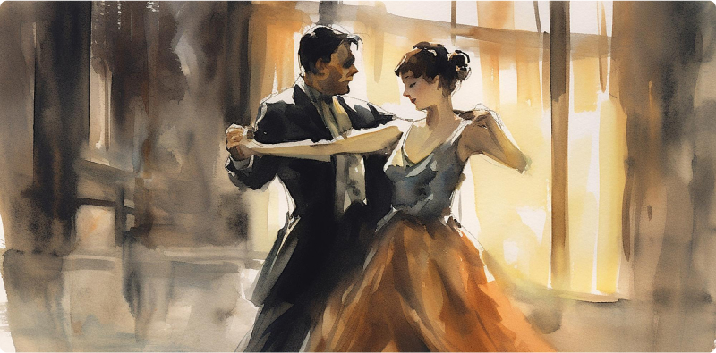
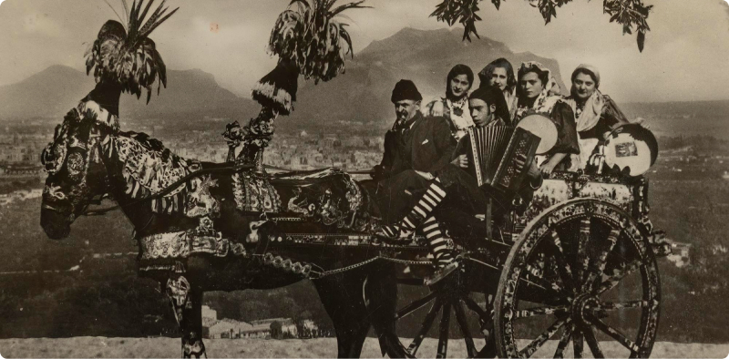
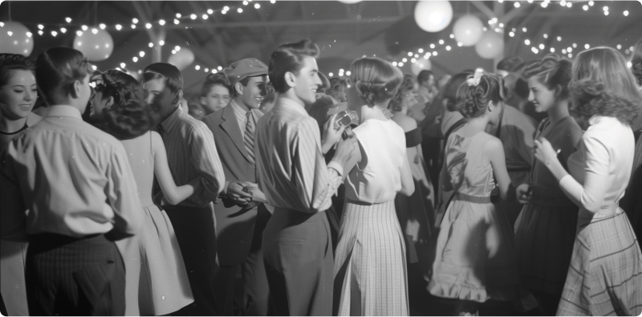

10 Creative Ideas
for Unique Wedding Photo Shoots
In the captivating world of event photography, where each frame tells its own story, we embark on a journey through time, tracing the remarkable evolution of this art form. From the early days of daguerreotypes to the digital revolution of the 21st century, event photography has continually adapted and transformed, capturing moments that transcend time.
Tracing the Development: Early Stages of Event Photography
in the 18th Century

Although the concept of event photography in its modern sense began to take shape only in the 19th century, its roots go even deeper. The earliest attempts to capture events in photographs can be traced back to the works of photographers in the 18th century, who used experimental methods to capture moments of light and motion. While the technical limitations of the time constrained the possibilities for photographers, their creative approach and pursuit of perfection laid the foundation for future generations of event photographers.
Uncovering the Past: Daguerreotypes and the Birth of Event Photography in the 19th Century
In the early 19th century, event photography was a luxury afforded only to the elite, with daguerreotypes capturing the essence of great occasions. These meticulously crafted images, engraved on silver-coated copper plates, preserved weddings, celebrations, and historical events for future generations. Daguerreotypes, as the first popular method of image fixation, became an unparalleled achievement in the history of photography, laying the groundwork for event photography as we know it.
Embarking on the Journey: Democratization and Accessibility
in the 20th Century

The 20th century witnessed the democratization of event photography, with the development of film technology making it accessible to the masses. Portable cameras like the Kodak Brownie gave people the ability to document their own events, ushering in an era of personal storytelling. Meanwhile, professional photographers honed their craft, experimenting with new techniques and styles to capture the essence of every event.
Embracing the Digital Era: The Revolution of Event Photography
in the 21st Century
Following the digital age, event photography underwent a revolution with the advent of digital cameras and editing software, transforming the landscape. Photographers embraced the flexibility and immediacy of digital technology, capturing fleeting moments with precision and creativity. From weddings and corporate events to concerts and festivals, digital photography became synonymous with the art of storytelling, allowing photographers to convey the emotion and energy of each event like never before.
Preserving Moments: The Enduring Legacy of Event Photography
Despite the evolution of technology, the essence of event photography remains unchanged – to preserve moments and create enduring memories. Whether captured on film or in digital form, event photography continues to transcend time, immortalizing the joy, excitement, and beauty of every occasion.
Reflecting on the evolution of event photography, we celebrate not only the achievements in technology but also the enduring legacy of this art form. From humble beginnings of daguerreotypes to the digital revolution of today, event photography continues to inspire, captivate, and preserve timeless moments that define our lives.